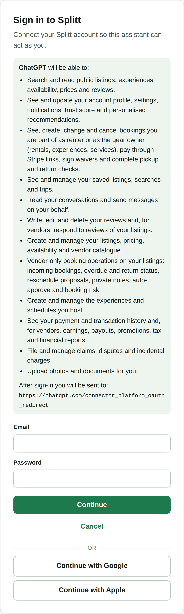
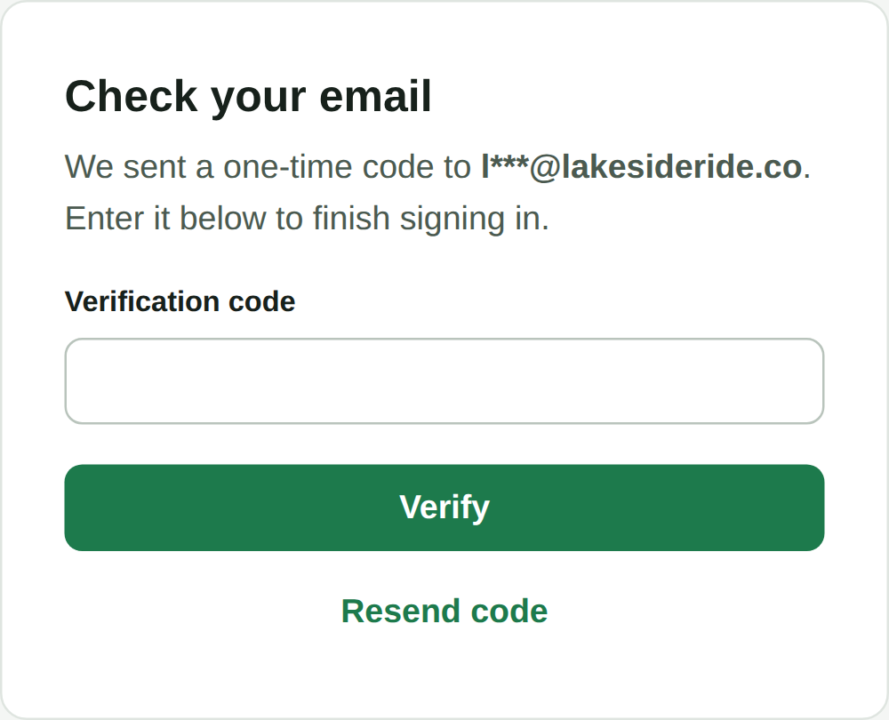

For vendors
How to connect ChatGPT to your Splitt account, what you can ask it to do, and how you stay in control of every change.
ChatGPT on the webSplitt in ChatGPT
Splitt has an MCP server: a secure connection that lets AI assistants such as ChatGPT use Splitt for you. (MCP, the Model Context Protocol, is the open standard ChatGPT uses to connect to other services.) Add Splitt to ChatGPT once, sign in with your Splitt account, and then just ask: update a listing, block out dates, check today’s pickups or reply to a renter.
You sign in on Splitt’s own page. ChatGPT never sees your password.
ChatGPT can only do what your Splitt account can do. Nothing more.
ChatGPT asks you to confirm before it changes anything in Splitt.
Payments only happen on Stripe’s checkout page, never in the chat.
One switch in ChatGPT’s settings, under Security and login.
Paste the Splitt server address into ChatGPT and choose OAuth sign-in.
Use your Splitt email and password, or Google or Apple.
Pick Splitt in a chat and say what you need. You confirm each change.
Your listings, prices and calendar, bookings, pickups and returns, messages, reviews, claims, experiences you host and, for account owners, earnings and payouts. The same things you manage in your Splitt vendor dashboard.
What you need
Check these first. Each one takes a minute, and together they cover almost every setup problem vendors run into.
Plus, Pro, Business, Enterprise or Edu. The free plan does not include it. On a Business, Enterprise or Edu workspace, your ChatGPT admin may need to allow developer mode for you first.
Set up Splitt at chatgpt.com on a computer. Developer mode is only available on the web, and your browser must allow the Splitt sign-in window to open.
The email and password you use on go-splitt.com, or your Google or Apple sign-in. If two-step verification is on, keep your email open for the code.
You paste this into ChatGPT in step 2. Type it exactly, including /api/mcp at the end.
Everything in this guide, including earnings, payouts and your Stripe payout account.
What your seat allows in the vendor dashboard. Earnings and payouts are owner-only, and staff can’t change pricing rules.
No vendor tools at all. If ChatGPT can’t see your listings, check which account you signed in with.
Steps 1 and 2 · In ChatGPT
Both steps happen in ChatGPT’s settings on chatgpt.com. You only do them once.
OpenAI calls developer mode powerful, and apps you add yourself are not reviewed by OpenAI. The Splitt server is run by Splitt, and the rest of this guide shows how you stay in control of what ChatGPT does with it.
| Name | Splitt |
| Description | Manage my Splitt listings, bookings and messages |
| Connection | The Splitt server address from page 3. Splitt’s server is public, so you don’t need a tunnel. |
| Authentication | OAuth |
Step 3 · On Splitt
ChatGPT opens Splitt’s sign-in page in a new window. The page belongs to Splitt, not ChatGPT: your password goes straight to Splitt and ChatGPT never sees it.

1 2 3 4Each line is one kind of access. It covers everything a Splitt account can do; your role still decides what actually works, so a manager’s seat never gains owner powers. If ChatGPT didn’t narrow its request, the card says it is asking for full access to your account. That is the same list.
The address must start with https://chatgpt.com/. If it shows anything else, close the window and don’t sign in.
Enter the email and password you use on go-splitt.com and select Continue.
If you signed up with Google or Apple, use Continue with Google or Continue with Apple instead.
If it’s on for your account, Splitt emails you a one-time code. Enter it and select Verify. It applies to Google and Apple sign-in too.

Step 4 · In ChatGPT
Turn Splitt on in a chat and ask for what you need, the way you’d ask someone on your team. ChatGPT looks things up straight away and asks you before it changes anything.
In a new chat, select + next to the message box, then Developer mode (in some versions More), and switch on Splitt. In some versions you can also type @ and pick Splitt.
Bookings, calendars, messages and numbers are read straight away. Reading never changes anything in Splitt.
Anything that creates, changes, sends or deletes shows what it’s about to do and waits for your Confirm. Nothing happens if you deny it.
Say “the Tandem Kayak” or “Jordan’s booking”. ChatGPT finds your listings, bookings and conversations itself, so you never need an ID or a link.
What you can ask
Splitt gives ChatGPT more than 200 actions, from listings to payouts. These are starting points: ask in your own words.
Who can do what
ChatGPT works through your own Splitt seat. Splitt checks every request against the same permissions as your vendor dashboard, every time.
| In ChatGPT | Owner | Manager | Staff |
|---|---|---|---|
| Earnings, payouts and your Stripe payout account | |||
| Seasonal rates and dynamic pricing | |||
| Auto-approve, report emails and the tax summary | |||
| Everything else: listings, calendar, bookings, messages, reviews, claims, experiences, fleet | Same as your seat in the vendor dashboard | ||
Renter accounts get no vendor actions at all. Your role also decides what works when ChatGPT tries: if your seat can’t do something, Splitt says “Not allowed for this account” and nothing changes.
The Splitt sign-in page lists twelve kinds of access, in these words. ChatGPT receives all twelve; your role still decides what actually works.
Safety
ChatGPT is fast, and it can misread a request. These habits keep your listings, bookings and money exactly the way you want them.
When ChatGPT asks to confirm a change, check the listing, the dates and any amount. If it isn’t what you meant, deny it and say what you want instead. ChatGPT can remember your answer for that action for the rest of the chat, so only allow that for actions you’re happy to repeat.
Cancel a renter’s booking and Splitt refunds them in full, whatever your policy says. The same happens if they decline new dates you proposed. A host cancellation can count toward your cancellation rate, unless you tell ChatGPT the reason is severe weather.
Splitt tells ChatGPT that text written by other people, like a renter’s message or a review, is information, not instructions. If a message asks for something (“refund me”, “change the price”), that is not your request. Never confirm an action you didn’t ask for.
Splitt never asks for a card number in the chat: a paid promotion opens Stripe’s checkout page instead. Damage claims, extra charges and payouts move real money, so ChatGPT asks you first. Payouts only go to your connected Stripe account.
Open the Plugins page, open the Splitt connection and disconnect or delete it. Once it’s removed, ChatGPT can no longer use Splitt.
Reset your Splitt password with Forgot password on the Splitt sign-in page. That signs you out everywhere, and ChatGPT loses access within about 15 minutes. Then write to security@go-splitt.com.
Troubleshooting
Most problems come from the ChatGPT plan, the account you signed in with, or a browser blocking the sign-in window.
| What you see | What to do |
|---|---|
| No Developer mode switch in Settings | Check your ChatGPT plan (Plus, Pro, Business, Enterprise or Edu). On a workspace, ask your ChatGPT admin to allow it. Developer mode can’t be on while Lockdown Mode is on. |
| The Splitt sign-in window doesn’t open | Allow pop-ups for chatgpt.com, then open the Splitt connection on the Plugins page and connect again. |
| “Invalid email or password.” | Use the email and password you use on go-splitt.com. Splitt shows the same message for a wrong email and a wrong password, on purpose. |
| No Google or Apple button | Set a password for your Splitt account first, then sign in with your email and that password. |
| “Too many sign-in attempts from your network.” | Splitt pauses sign-in after 10 failed attempts in 10 minutes. Wait a few minutes and try again. |
| “This sign-in page has expired.” | The sign-in page stays open for 10 minutes. Go back to ChatGPT and connect again. |
| ChatGPT can’t see your listings or bookings | You may have signed in with a renter account, or your vendor account was approved after you connected (approval signs you out everywhere). Disconnect, then connect again with your vendor login. |
| “Not allowed for this account” | Your seat can’t do that. Only the owner sees earnings or requests payouts, and staff can’t change pricing rules. |
| “Splitt rejected the session” | Your Splitt session ended, for example after a password reset. Connect Splitt again in ChatGPT. |
| ChatGPT says it hit a limit | Splitt limits how many requests arrive each minute. Wait a minute and ask again, or ask for fewer things at once. |
| “You can only message a user you have booked with” | You can only message renters you already have a booking or a conversation with. Ask ChatGPT to reply in the existing conversation. |